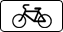
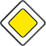

и линиями дорожной разметки или без таковых.
и линиями дорожной разметки или без таковых.
На левой стороне дороги остановка и стоянка разрешаются в населенных пунктах на дорогах с одной полосой движения для каждого направления без трамвайных путей посередине и на дорогах с односторонним движением (грузовым автомобилям с разрешенной максимальной массой более 3,5 т на левой стороне дорог с односторонним движением разрешается лишь остановка для загрузки или разгрузки).
Способ постановки транспортного средства на стоянке (парковке) определяется знаком 6.4 и линиями дорожной разметки, знаком 6.4 с одной из табличек 8.6.1 - 8.6.9
и линиями дорожной разметки или без таковых.
Сочетание знака 6.4 с одной из табличек 8.6.4 - 8.6.9 а также линиями дорожной разметки допускает постановку транспортного средства под углом к краю проезжей части в случае, если конфигурация (местное уширение) проезжей части допускает такое расположение.
Стоянка на краю тротуара, граничащего с проезжей частью, разрешается только легковым автомобилям, мотоциклам, мопедам и велосипедам в местах, обозначенных знаком 6.4 с одной из табличек 8.4.7
, 8.6.2 8.6.3 8.6.6 - 8.6.9
.
на трамвайных путях, а также в непосредственной близости от них, если это создаст помехи движению трамваев;
на железнодорожных переездах, в тоннелях, а также на эстакадах, мостах, путепроводах (если для движения в данном направлении имеется менее трех полос) и под ними;
в местах, где расстояние между сплошной линией разметки (кроме обозначающей край проезжей части), разделительной полосой или противоположным краем проезжей части и остановившимся транспортным средством менее 3 м;
на пешеходных переходах и ближе 5 м перед ними;
на проезжей части вблизи опасных поворотов и выпуклых переломов продольного профиля дороги при видимости дороги менее 100 м хотя бы в одном направлении;
на пересечении проезжих частей и ближе 5 м от края пересекаемой проезжей части, за исключением стороны напротив бокового проезда трехсторонних пересечений (перекрестков), имеющих сплошную линию разметки или разделительную полосу;
ближе 15 метров от мест остановки маршрутных транспортных средств или стоянки легковых такси, обозначенных разметкой 1.17 ,а при ее отсутствии - от указателя места остановки маршрутных транспортных средств или стоянки легковых такси (кроме остановки для посадки и высадки пассажиров, если это не создаст помех движению маршрутных транспортных средств или транспортных средств, используемых в качестве легкового такси);
в местах, где транспортное средство закроет от других водителей сигналы светофора, дорожные знаки или сделает невозможным движение (въезд или выезд) других транспортных средств, или создаст помехи для движения пешеходов;
на полосе для велосипедистов.
в местах, где запрещена остановка;
вне населенных пунктов на проезжей части дорог, обозначенных знаком 2.1 
ближе 50 м от железнодорожных переездов.